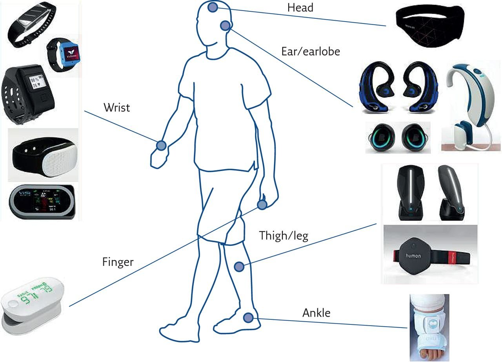
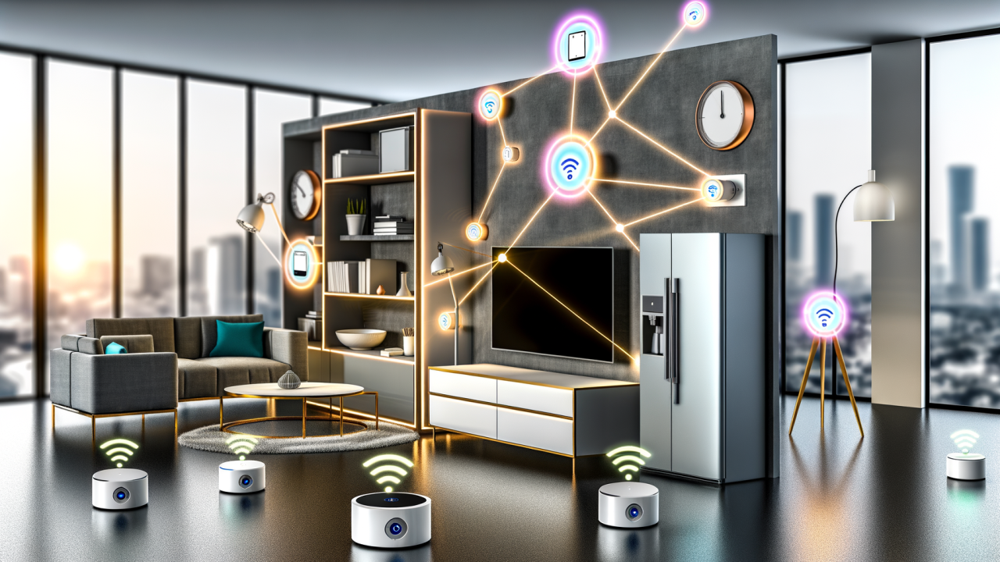

The Hidden Dangers of EMR: How Everyday Devices Are Impacting Your Well-being
In our modern world, technology surrounds us, making life more convenient and connected than ever before. However, this convenience comes with a hidden cost—constant exposure to electromagnetic radiation (EMR) from the countless devices we use daily. While these devices have become essential parts of our lives, the cumulative effects of their radiation can pose serious risks to our health.
A Day in the Life "Kay" (Bra Kofi)
Let’s take the example of Kofi, a 35-year-old gentleman living in East Legon, Ghana. Kofi works as a bank officer, a job that keeps him surrounded by technology from morning to night. His typical day illustrates just how pervasive EMR exposure can be in our lives.

MORNING ROUTINE: Bra Kofi wakes up to the sound of his smartphone alarm at 6:00 AM. After checking his emails and scrolling through social media, he heads to the kitchen to prepare some Tom-brown. As he warms up the bread in the microwave oven, his smart refrigerator quietly monitors the food inventory, and his smart TV connected to the Wi-Fi plays the morning news from Wion (online Tv). All of these devices emit varying levels of EMR.
COMMUTE TO WORK: On his way to work, Kofi listens to a podcast through his Bluetooth headphones, another source of EMR. In the office, he spends most of his day at his computer, working on spreadsheets, answering emails, and attending virtual meetings. His desk is equipped with a wireless mouse, keyboard, and a printer—all of which contribute to his daily EMR exposure.
WORK ENVIRONMENT: Bra Kofi’s office is equipped with multiple devices that constantly emit EMR. The Wi-Fi router provides seamless internet access throughout the office, while the photocopier and scanner are frequently used by his colleagues. Even the fluorescent lights in the office emit a low level of EMF, contributing to the overall electromagnetic environment.
LUNCH BREAK: During lunch, Kofi steps out of the office and stops by a nearby KFC, where he connects to the public Wi-Fi to continue working on his laptop. The place is filled with people using smartphones, tablets, and other wireless devices, all adding to the electromagnetic radiation in the environment.
EVENING RELAXATION: After a long day at work, K’ returns home and unwinds by watching his favourite shows on his smart TV, while his wireless home theatre system provides immersive sound. His Wi-Fi router remains on, keeping him connected, and his smart home devices, including a smart thermostat and security cameras, continue to operate in the background. K’ also spends some time on his tablet, catching up on the news and chatting with friends.
Before going to bed, Kofi places his smartphone on the bedside table, leaving it on throughout the night, just a few inches from his head. Unknowing enough to K’, this seemingly harmless routine is exposing him to EMR even while he sleeps.

The Accumulated Risk
Bra Kofi’s daily routine is a perfect example of how pervasive EMR exposure is in modern life. From the moment he wakes up to the moment he goes to bed, Kofi is surrounded by devices that emit electromagnetic radiation. While each device emits various levels of EMR, the cumulative exposure over time can have serious health implications.
Cognitive Impairment: Constant exposure to EMR, particularly from smartphones and computers, has been linked to cognitive issues such as memory loss, difficulty concentrating, and decreased mental performance.
Sleep Disturbances: The presence of EMR in the bedroom, especially from smartphones and Wi-Fi routers, interferes with sleep patterns, leading to insomnia and chronic fatigue.
Increased Cancer Risk: Prolonged exposure to EMR, especially from devices like smartphones and Wi-Fi routers, has been associated with an increased risk of developing certain types of cancer, including brain tumours.
Cardiovascular Issues: The constant exposure to EMR from multiple devices throughout the day can contribute to heart-related problems, including elevated blood pressure and arrhythmias.
Fertility Concerns: EMR exposure from devices carried close to the body, such as smartphones and laptops, has been linked to reduced sperm quality in men and potential fertility issues in women.
Neurological Disorders: Long-term exposure to EMR has been associated with an increased risk of developing neurological conditions such as Alzheimer’s disease and Parkinson’s disease.
Reduced Academic Performance in Children: Children, with their developing brains, are especially vulnerable to the effects of EMR. This leads to behavioural issues and reduced academic performance.
Ever-Save Africa’s Nationwide Campaign
K’s story is not unique—many people across Ghana are unknowingly exposing themselves to harmful levels of EMR every day. The cumulative effects of this exposure can have far-reaching consequences for public health. Especially when cancers are on the rise; breast cancers, cervical, prostate and even testicular cancer which now has a dedicated month. Cancers have now become like Malaria.
At Ever-Save Africa, we are committed to raising awareness about the hidden dangers of EMR and providing people with the knowledge and tools they need to protect themselves. Our nationwide campaign aims to educate communities across Ghana about the risks associated with electromagnetic radiation and how to minimize exposure in their daily lives.
Through seminars, workshops, and school visits, we are working to empower individuals to make informed choices about the technology they use and to create safer environments for themselves and their families. By understanding the risks and taking action, we can reduce the harmful effects of EMR and promote a healthier, safer future for all.